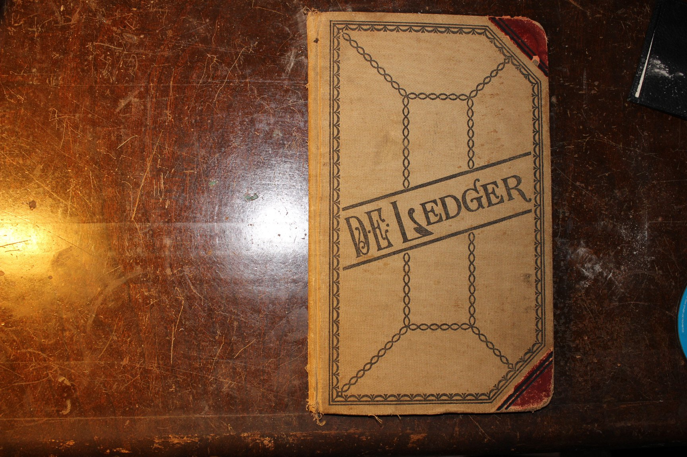

It started as a “Weather Record” in the back of one of Uly’s account books: the temperature on Christmas morning, whether there was snow, whether the ground was froze and the corn was shucked. It was Uly’s book and nobody else touched it — “But it was a real family tradition to watch him write his little bit in it at Christmas,” Aunt Ruth remembered. Dad remembered “going with Dad to Grandpa’s on Christmas Eve to ‘write in the book.’”
As Uly aged, other hands took over, and after he died in 1967 the book passed down with the farm. The entries grew from weather into a family chronicle: who came to dinner, who got married, who was born, what corn made to the acre and what a coon hide brought. Read top to bottom, it is the whole twentieth century on one farm. Entries that record a family event are tinted.

1923Temp. 33° snow in the morning ground not froze
1924Temp. 8° below zero 3 inches of snow on the ground ground froze
1925Temp 20° above zero. About two inches of snow on ground and the ground froze. (Killed fox December 23) Scared him up. 20 $10 for him
1926Christmas day not very cold Snowing at 2 o'clock and by 8 o'clock 6 in snow Big dinner at Julis [Dana Julius - it is written later in the same way]
1927Temp 20° above zero No snow and no fodder shredded or[&?] all standing corn shucked
1928Temp. about 35° no snow yet this winter. Corn all in crib. [three words blacked out] xmas eve.
1929Snow on the ground. About 20 inches Temp. about 25° The snow fell Dec 18 Snowed all day and all night. Roads blocked. The ground is not froze very much. [Boxed in to the side: Killed a fox Nov. 25 1927 $8.50 About 3 or 4 inches of snow Jan. 1, 1928. 15° F below zero About six inches of snow Jan 1, 1929 4° below zero.]
1930Not very cold 30 above Went to Dana Julis [Julius] for dinner
1931Warm weather all fall. Had 3 or 4 inches of snow Thanksgiving. No snow xmas Temp. about 32° Christmas morning Dinner at Dana Julius
1932Warm to day Temp about 50° It has been rather cold all winter until this week
1933Warm weather all fall. No zero weather yet. Temp about 50° today turned cold a days latter about 4° below zero. on Dec 19
1934Temp - about 30° Plenty of snow no very cold weather this winter.
19356 in snow 4° above zero Stormed all day very windy & cold
1936Not Cold About 50 Had a light snow before Christmas
1937Temperature about 30° Severe winter so far. No shredding done yet. 3 snows & one bad ice. Uncle Dana died Nov. 5 1937
1938Temperature about 28° mild winter so far. Small trace of snow.
1939Temperature about 28° mild winter Warmest winter in 69 years.
1940Temperature about 50° mild weather to date
1941Temperature about 40° mild weather several snows
1942Temp. about 70° Has been cold about 5 weeks. Snow & ice on ground
1943Temp. about 18° Have had about 3 weeks of cold weather. Corn all shredded. Several light snows.
1944Temp about 20° Have had about 3 weeks of cold weather. Snow for last 3 weeks. Snowing today. Have only shredded 1/2 day at home.
1945Temp. about 34°. Have had 3 weeks of snow. 8 inches deep for last week. Snowing today most north and south roads blocked. Have only shredded 1/2 day at home.
1946Temp about 17° Have had mild weather about 1 in snow on Dec 21 but all melted by Dec 23
1947Temp. about 20° snow on ground & freezing rain today Have had rather cold & snowy month so far.
1948Temp about 20° cold wind today about 6 snow Dec 18. Most of it gone. Mild weather so far.
1949Temp about 32° - windy - from South trace of snow this mo. Not very Cold This Winter
1950Temp about 6° this AM snowing today. Have had cold & snow for the last 6 weeks Some 0° mornings.
1951Temp. About 40°. Were going to John's but can't because of ice and snow on roads. Have had down to 15° below all ready. "Ruth"
1952Temp about 30° Trace of Snow Today. Not Very Cold This Winter to date. Had about 6" snow This Winter.
1953Temp. about 30° Trace of snow Today. Not Very Cold this winter. Have one zero temp reading Dec 22
1954Temp 44° - 12 Noon Not a Cold Winter - Low reading 14° to date. Had 1" snow
1955Temp 30° - AM Rather Cold Winter Low of 0° To date. 2" snow Dec 14 all melted by Dec 24
1956Temp 30° cloudy light snow on ground 3 snows to date. Turkey Dinner at John's
1957Temp 32° warm winter - Much rain - Raining Today. One cold spell - one snow This Dec. Ground not froze. Grandma Sloan went to the Hospital Dec 26.
1958Warm about 32 At John for Dinner
1959Warm about 40° - Ruth & Children, Harold & Family - Dad, Ellis, John Mary & Jill at Dinner we did have about 1" to 2" of snow but all melted by today. Mild winter with only one 5° above reading for the low this year.
1960Got up to 40° in afternoon cool in morning One Fri Before Christmas was -14° a little snow
1961Temp 26° Some snow on ground at Dad's about 6" at John's Aunt Zora had dinner for Dad, Ellis, John, Mary & The Harold Sloan Family on Dec 24
1962Temp 30° - 1 inch snow Rain & Freezing in PM 13 below about Dec 15
1963Temp 18° - 5" snow on ground 40° high Temp Today about 10 Days Previous with Below 0° readings
1964Temp - [crossed out: 32 above] 28 above Dinner at Harold Sloan [???]
1965Temperature 32° up to 40 afternoon no snow 60 on New Years [????] on top of ground 60° No cold weather to date [Crossed out: Uly fell Dec 24 went to [???] on 25th] Ellis, Harold, Kip, Carl killed a fox.
1966Temp. 12 Mild winter trace of snow Dad fell Dec 24. [Crossed out: Dad fell and went to nursing home] Uly Died April 26, 196[crossed out: 6]7
1967Temp High 30 low 28 Mild winter lots of rain Little snow on Christmas Day Temperature was 66 on Dec 21. Record.
1968Temp 21 high low 6 got Xmas Pictures & Card from Ruth & Family Very little snow Dinner at Harold's
1969Temp 30° 3 inches snow low 18° Had lots of rain Nov & Dec Dinner at Harold's. Jack & Ruth & The Four J's Ruth John & David Gum at Dinner
1970Temp 30° Little snow fell today lot 15° Wet most of year. Dry Nov. and Dec. Dinner at Harold's. Called John [looks like Josh or Jack but must be John] & Ruth on 24th in Denver.
1971Temp 44° Lot 12° in Dec Lots of Rain in Nov & Dec Very little snow this winter Low on Christmas 38° Dinner at Harold's Fine Rain falling Temperature 54 at 10PM
1972Temperature - warm - rainy Beans and corn still in the field - too wet Beans at $11.00 per bushel Ellis L. Sloan killed in traffic - July 23
1973Temperature - cold - some snow all winter Crops all in good yield good prices Debbie Kenricks stayed Jan. to Oct. with us Theresa got Honda Motorcycle for Xmas
1974Temperature Cold - 24 in. snow for hollidays - had to walk in to feed horses. Late spring - summer drought - killing frost in Sept. Poor yield fair prices for what we got in. Stud colt born to Lily (Tim's mare) June 10th
1975Temperature upper 20s 2 in snow on Xmas eve. Only one snow (trace) before now. Dianne S. married to Robert Perkins on Sept. 27th. Married in Pleasant Hill Church, living in mobil home at farm. No below 0° weather yet.
1976Two light snows to date. Temp in low 30s on Christmas - pretty cold all winter but no below zero days. Misty Lynn Perkins born on Election Day this year. Dinner at Cambria with Harold, Terry, Kip, Carl, Tim, Laura, Dianne, Bob, and Misty. All crops in before Thanksgiving - 147 bu/acre corn
1977Pretty cold and snow still on ground from Blizzard on Dec 5-6 & 7 all roads were closed three days. Good corn crop, beans still in field this date. Dinner at Cambria for Terry, Harry, Kip, Carl, Laura, Tim (Sloan) & Bob & Dianne Perkins & Misty
1978High 20's low 30's first snow came on Christmas Eve. No real cold weather yet. Crops all in by Thanksgiving. BEans fair, corn good 149 Bu per acre. Planted 4 acre of millett and sunflowers for wildlife. No birds at all (quail) survived last year's blizzards. Snow never left till Valentines Day. Harry & Boys had to walk in to farm twice with groceries for Bob & Dianne and some for Harry. Carl Sloan joined U.S. Marine Corps this spring & doing well. Kip Sloan & Deanna Torrence were married at Hope Methodist Church in Frankfort on June 3rd. Now living at farm. Bob & Dianne moved to Frankfort. Dinner at Cambria for Harry, Theresa, Carl, Tim, Laura, Kip & Deanna, (Sloans) Bob & Dianne, and Misty Perkins. Sold 6 muskrats at 4.80 apiece and 2 coons - $9.00 and $20.00
19792 light snows so far, mild winter except 2 cold mornings aroudn 4° Temp today around 40° 160 bu corn 40 bu beans This year price was fair finished harvest Nov 20th Dinner at Cambria Harry, Terry, Kip, Deanna, Bob, Laura, Dianne, [names removed], Misty, and 2 new arrivalls Robert Perkins Jr. Born Aug 23 1979 and [name removed] born Oct 22, 1979. Carl T. Sloan is in Okinawa in U.S.M.C. Sold 10 coons - $40.00 to $30.00 apiece 5 'rats - $7.00 apiece also 4 skunks to make into hats Ruth Hutchins visited Dec. 20-21-22
19802 light snow so far total 2" Nice snow Xmas eve. Temp around -3° this AM coldest so far. Mild winter. 140 bu corn 40 Bu beans good prices. Finished harvest Nov 11th. [names removed] married Jan 14th, 1980 at Pleasant Hill. [name removed] born 7 weeks premature on ________ at 4 lb 3 oz. Tough time at first, both OK now, [the baby] weighs 8 lbs at this date. Dinner at Cambria for Harold Sr, Theresa, Larua, Robert Perkins, Dianne, Misty, and Robert Perkins Jr., Carl Sloan, [names removed]. Carl went to Europe this fall on U.S.M.C. exercises. Sold 10 coons - $25 top Sold 20 'rats - $7 top Sold 2 mink - $10 top
1981Kip and Deanna had a boy, [name removed], on Feb. 8, 1981 Kip and Deanna moved to Cambria in Oct. - old Michael place
1982[names removed] had a boy, [name removed], on May 8, 1982 Carl came hom from Marines (permanently) in April as a Sgt.
1983Bitter cold - blizzard on Dec 24th - reached -17° with wind chil in -70's Sun dog seen on on Christmas Day - Electricity went out 8 A.M. Dec 24 and was out 10 hrs.
1983Kip and Deanna had a boy, [name removed], on June 7, 1983 [names removed] had a boy, [name removed], on May 28, 1983 Sold 5 coon - $15 top, 15 rats - 4.00 top, 5 mink - 20.00 top Was a drought year, with big government program
19842 snows - second on Christmas Eve - also was coldest night so far, at 5°. Crops all in before Thanksgiving. Has been a mild winter. Several Dec. days in 50's. Deanna's father, Buddy J. Torrence, died on May 21. Visiting on Christmas Day at Mom and Dad's were: [names removed] Boba and Dianne with Misty and Robbie Carl and Cheryl by their lonesomes Kip and Deanna with [names removed] Sold 10 coons - 25.00 top - 8 rats - 3.50 top 1 mink - 18.00
Transcribed by Ben Sloan, July 2018. Bracketed italics are the transcriber’s notes. “Kip” is Harold Jr.; “Harry” and “Terry” are Harold Sr. and Theresa. The names of Kip and Deanna’s children are left out of this copy. The photographs of every page are in the research folder.